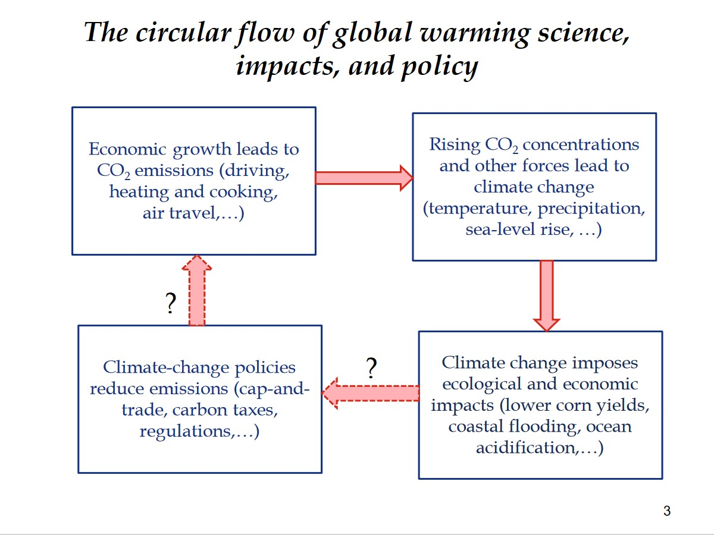

Who are the most important economists: - pigou - nordhaus - weitzman - stern
What policies are currently in place
Why a price to carbon is a good thing? - incentives - signal
How is it measured?
damage
cost
Cap and trade vs carbon tax
countries implementing carbon taxes: - ARgentina - Canada - UK - EU - Sweden - Japan
trading gives companies higher incentives to cut emissions
cap and trade: which companies must pay? - government distributes allowances across industries
It worked for sulfur dioxide pollution : acid rains
2017: China: nationa carbon market
Reaching such a target for a global good (the climate) with minimal distortions would a priori require imposing a common price for carbon worldwide. There are many reasons why this may not be feasible. In particular, rich countries have accumulated a stock of emissions over the past centuries and should support a stronger effort, while poor countries need to catch up in terms of income in order to reach the technical level they need to efficiently cap their missions.
carbon leakage: - the direct leakage problem - sectors under constraint displace their production in regions where the constraint is less binding - indirect leakage problem is related to energy markets - by reducing their demand in fossil energy, regulating countries depress its price, which leads indirectly to higher emissions by nonconstrained countries
Current policies: - energy intensive manufacturing: ETS system - free allowances to high-emitting industries - member states: - carbon taxation systems for services and non-tradable goods (housing, transport) - no measure at the border
CEPII briefing
First best : worldwide carbon price
Carbon Border Adjustment: - carbon pricing of imports + carbon border adjustment - tariff - consumption-based carbon taxation - uniform tariff on countries not imposing (equivalent) policies to solve free-riding problem
ZEN
Global Carbon Budget
the climate clock
\(\Delta T\) ~ \(\Delta S\) (stock of GHG)
Options (1)
identity of Kaya
- population growth
- economic growth
- energy intensity
- carbon content of energy
economic growth
decrease or change behaviour ?
decarbonisation of energy
fact : fossil fuels are not rare
problem: some stay underground - coal and oil
stranded assets
exploration / investment continues - why ? (lack of credibility) - myopia / free riding
gas
less polluting technological lock-in
renewable
now cost- efficient
problem: not controllable
negative emissions:
reforestation bioenergy
geoengineering
Climate policy
Pigou 1921: Carbon tax is efficient
price to a good that would be overconsumed
carbon tax has weaknesses: - not enough for green R&D - - behavioural bias - netweork externatlities - ..
other instruments …
Carbon tax very impopular. Why
it is regressive
compensate for regressive effects
target transfers
NB: standards and regulations just as regressive
Climate policy
new risks
- Paris agreement
Types of risk
transition risk: from stranded assets
Macro policy: damage avoided
France: government preparing +4%
Nordhaus
Climate Change as a Global Public Good
- nonrival
- non-excludable
the theory of public good was developped by Samuelson public bad
successful international agreements: - trade disputes (WTO) - onzone-killing chlorofluorocarbons (Montreal protocol)
national issue: - global interest instead of personal interest international issues: - individual nations enjoy only a small fraction of the benefits of their actions
Integrated-assessment model
- nordhaus 75-77: energy/climate model
- nordhaus 83: static with damage
- nordhaus 90:
- Nordhaus 92-94-2016: Dynamic Integrrated model of Climate and the Economy
- cv evolution in Nordhaus 2018a
variants: RICE, PRICE, R&DICE (innovation), C-DICE (coalition)
structure of DICE: circular flow

Mathematical Optimization
\[\max_{c_t} W = \max _{c_t} \int_0^{\infty} U[c(t)] e^{-\rho t} dt\] s.t. \[c(t) = M(y(t), z(t); α, ε(t))\]
Most complicated part: modelisation of the contraints.
Currently: about 20 equations to model the constraints.
Earth science: - burning of fossil fuel -> Carbon Dioxyde - - GHG accumulate in the atomosphere - warms land and oceans - feedback effects
At the same pace: concentration in 20110 will includece +3/5 degrees in 2100.
Higher than any past temperature
Solutions to slow dowsn climate change
A. abatement, i.e. reduce emissions of CO2, by reducing use of carbon fuels B. carbon removal: remove CO2 from emissions or from the atmosphere C. geoengineering (solar radiation-management: change reflectivity of the earth)
C. make earth more reflective. little mirrors. ex: add sulfate aerosols in the stratosphere - no effect on ocean carbonization - uneven effects - complicated international cooperation - salvage therapy B. not feasible for now A. abatement - average across several studies (cf Gillingham et al.) - cost for 50% emissions (0.5->3) - cost for 100% emissions (2->6) - assume different policies, and participation rates
Is the cost measure realistic ?
Damages
damages to different sectors: - managed - unmanaged (provide examples: high income, low income)
tipping points: -> sudden/irreversible damage - makes systems effectively unmanageable
impacts: nonlinear and cumulative early studies: 1 or 2 degrees innocuous mor erecent ones: (ex 2018 IPCC report on 1.5) even 2 degrees highly disruptive
DICE: damages are market and non-market - 2% at 3 degrees of permanent consumption - 8% at 6 Howard and Sterner: even more *3.5 times higher
damages: - include catastrophic events - do not allow for fat tails (contentious)
Criticism: it monetizes all activities - can you value lost island, house damaged by hurricane - traditional answer: we need a metric
Keynes: better to be vaguely right than precisely wrong
IAM: main finding
social cost of carbon
the shadow price of optimization what would be the benefit of relaxing the constraint by a little amount ?
objective
setting up a target:
cost of attaining the target?
cost-benefit analysis
major findings
- slow emissions as soon as possible
- uniformity of prices
- equalize marginal cost of reducing emissions everywhere
- carbon price should be equal everywhere
- high participation
- policy ramp up over time
Disagreement is about the kind of policy
findings
DICE: 135 infeasible cost-benefit: 3 degrees in 2100
Carbon-pricing
must raise price of CO2
two options: - cap maximum emissions and trade - levy tax on carbon
consequences: signal for conusmers, producers, investors + information
Issues of discounting
Ramsey-problem
National to International
Free-riding
free-riding and double free-riding
The concept of global warning was created by and for the Chinese, in order to make U.s. manufacturing non competitive.
CLimate agreements
1994: United Nations Frameowrk Convention on Climate Change
The ulitmate objective is to achieve stabilization of greenhouse gas concentrations in the atmosphere at a level that would prevent dangerous anthropogenic interferences with the climate system.
1997: Kyoto protocol - high income emission: below 1990 fro 2008-2012 - international cap-and-trade system
US out : mostly because india and china not subjected
emissions grew faster in non-participating countries
was aiming two cover 2/3 of global emissions but ended up covering 1/3 only
Paris 2015: target 2% above preindustrial levels
China announced target: - reduce intensity until 2030 Us: 26-28 by 2025 Biden: cute emissions 50% below 2005 levels by 2030
Results
Global carbon itensity as declined at 1.6% per year … since the 60s…
Higher rate since 90s… mostly from China
Commitements are very modest
Climate Clubs
membership: implement global price of carbon penalise free riding
easier to negociate: dimensionality of negociation modern version of ken arrow theorem